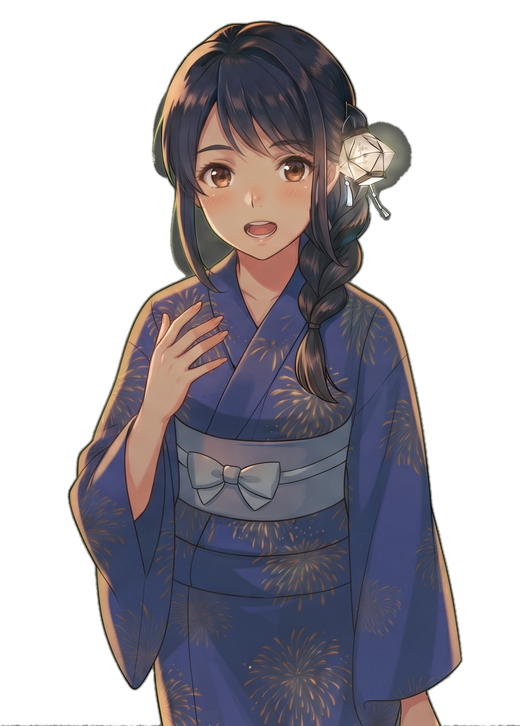
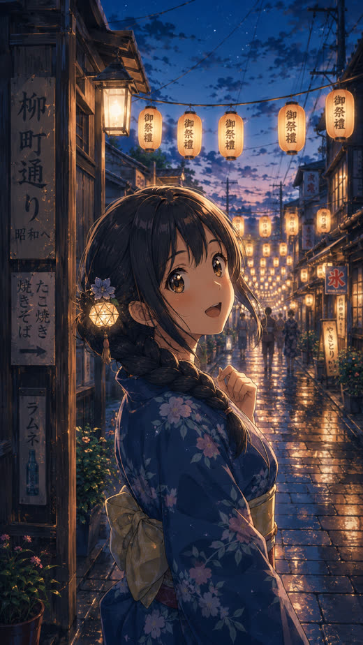
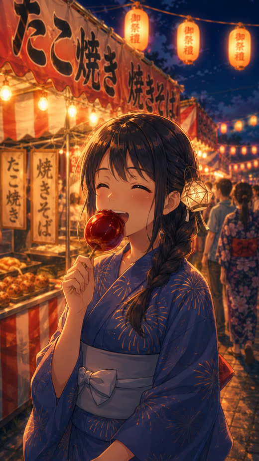
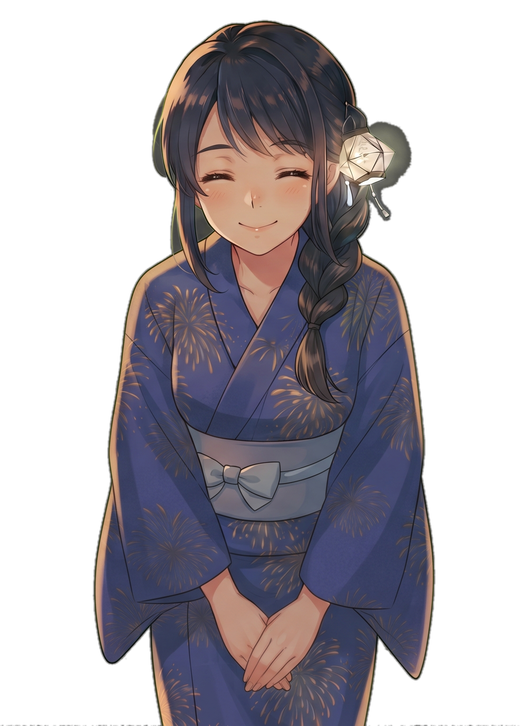
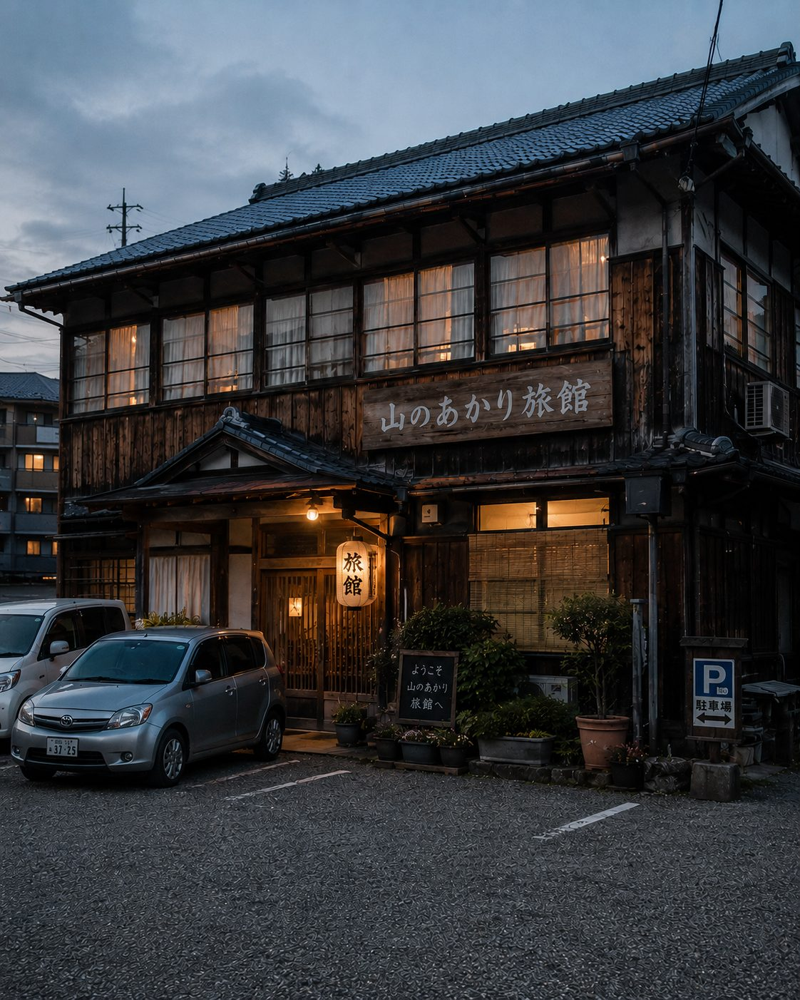
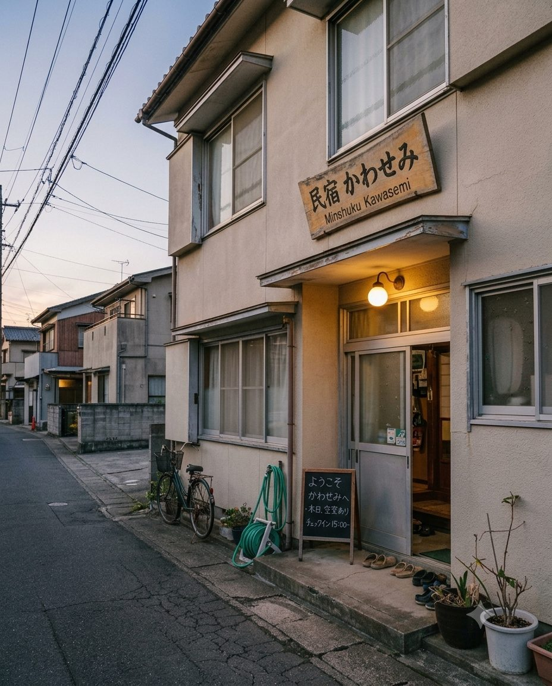
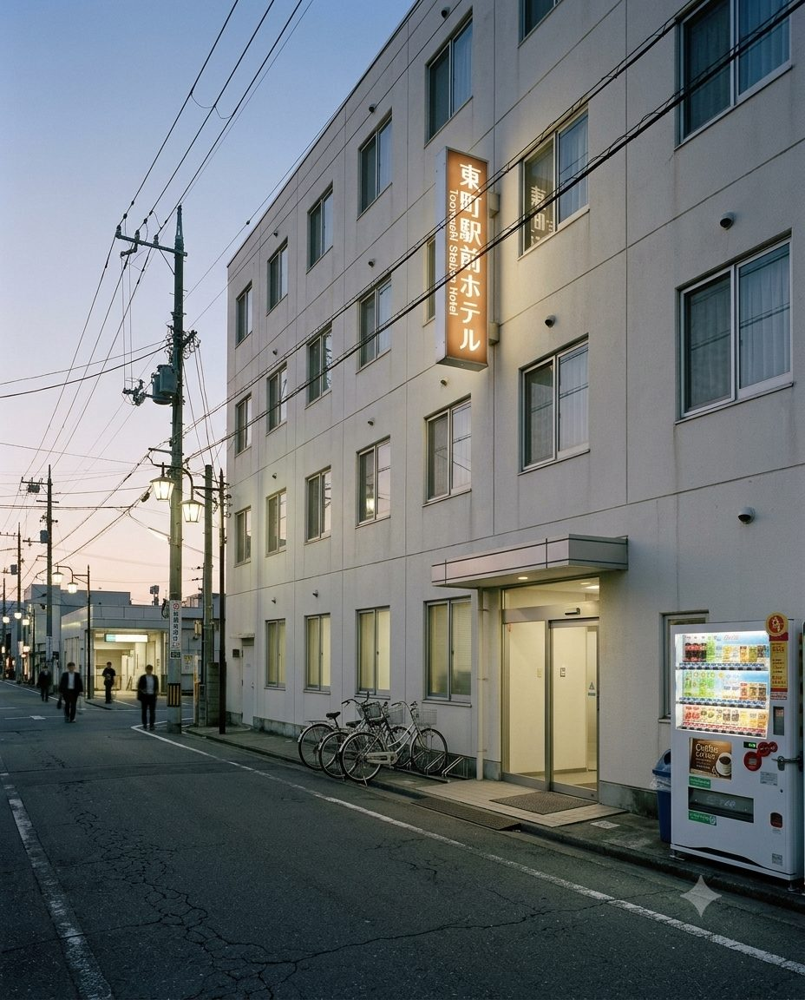
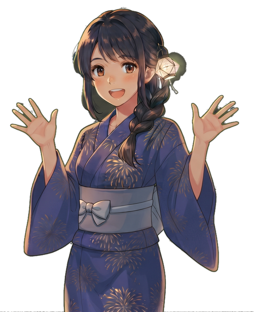

有名じゃなくていい。ちょっと懐かしい夏を、とおまちで。
「今年の夏、ここに決めた。」
Instagramで公開中のリールと同じ映像です。とおまちの一晩を、30数秒で。

まずはこの動画で、雰囲気だけでも見てみて。

曲がった先に、ちょうどいい景色があったんだ。
駅から歩いてすぐ。川沿いに、ゆるく人が集まるくらいの賑わい。混みすぎないから、座って、話しながら、ゆったり花火が見られる。気合いを入れなくても、ふらっと行けるくらいが、ちょうどいい。
予約席、特等席で待ってるね。
| 開催日 | 8月中旬の土曜（年1回開催） |
|---|---|
| 会場 | とおまち川河川敷 |
| アクセス | とおまち駅から徒歩約10分。駐車場は台数限定のため、公共交通機関のご利用がおすすめです。 |
| 入場 | 無料（観覧エリア指定なし・予約不要） |
| 有料観覧席 | ¥1,500（税込）／1名（事前予約制・先着） |

着いたらまず、屋台をひとまわり。
夕方に着いて、商店街をぶらぶら。手書きの幕がゆれる屋台で、まずは腹ごしらえ。
日が落ちたら、河川敷へ。ちょうどいい人の賑わいの中、夜空いっぱいに花火が上がる。
その夜は町に泊まって、翌朝もゆっくり。祭りのあとの静かな時間も、とおまちらしい。
昭和から変わらない町並みが、今も現役。どこか懐かしい夏がここにある。
いつもの街から少し離れるだけで、気分はちゃんと"旅"になる。
混みすぎず、静かすぎず。ひとりでも、友達とでも、心地よく過ごせる賑わい。
実際の観覧エリアの雰囲気（当日の様子）

泊まる宿も、一緒に探そうか。
町内の宿は数に限りがあります。気になる宿が見つかったら、LINEで気軽に空室を相談してみてください。

町の歴史を感じる、落ち着いた佇まいの旅館。駐車場あり。

一軒家を改装した、家族経営のあたたかい宿。

駅からも会場からも近い、身軽に泊まれるホテル。
町の定番、飾らない定食屋。
定番焼き魚定食・日替わりランチ
特別な夜に、腕利きの一皿を。
おすすめ季節のおまかせ握り
川のそばで受け継がれる、うなぎの老舗。
名物うな重（特上）
懐かしい洋食屋の味、子どもから大人まで。
人気オムライス・ハンバーグ
昭和の空気そのままの、休憩にぴったりな喫茶店。
定番ナポリタン・自家製プリン
昼はカフェ、夜はバー。宿泊の夜にも使いやすい一軒。
おすすめ生ビール・自家製おつまみ盛り
実際に来てくれたみなさんの声を、集めてみたよ。
正直、花火大会ってどこも混んでて疲れるイメージだったんですが、ここは思ったよりゆったり見られて、ふらっと来てよかったです。
商店街の出店を見ながら歩くだけでも楽しくて、花火が始まる前から十分楽しめました。
駅からすぐだったので、思っていたより気軽に行けました。
派手さよりも、ゆったりした雰囲気が良くて、また来てもいいかなと思いました。

気になること、なんでも聞いてね。
日帰り観覧は予約不要です。ゆったり座って見たい場合は、有料観覧席のご予約をおすすめします。
最寄り駅から徒歩約10分です。当日は周辺道路が混雑するため、お車でのご来場はおすすめしておりません。
小雨決行です。荒天時は翌日に延期となる場合があります。最新情報は当日公式LINEでご案内します。
はい。混雑が激しくない規模感のため、お子様連れのご家族にも来場いただいています。
LP内でご紹介している町内の宿泊施設から気になるところをお選びいただき、公式LINEからお気軽にご相談ください。空室状況やプラン内容について、スタッフが個別にご案内します。
有料観覧席は前日17時まで無料でキャンセル可能です。
都市部の大規模花火大会に比べると、混雑は穏やかです。ゆったり過ごしたい方に向いています。
商店街エリアに多数の出店が並びます。食べ歩きグルメも楽しみのひとつです。
気合いを入れなくていい。ふらっと来て、ちょうどいい夏を過ごしてほしい。